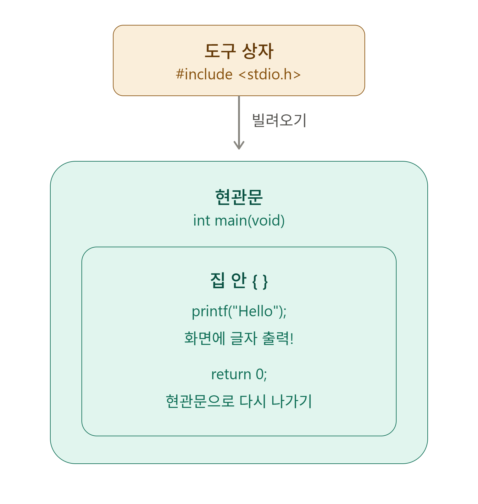
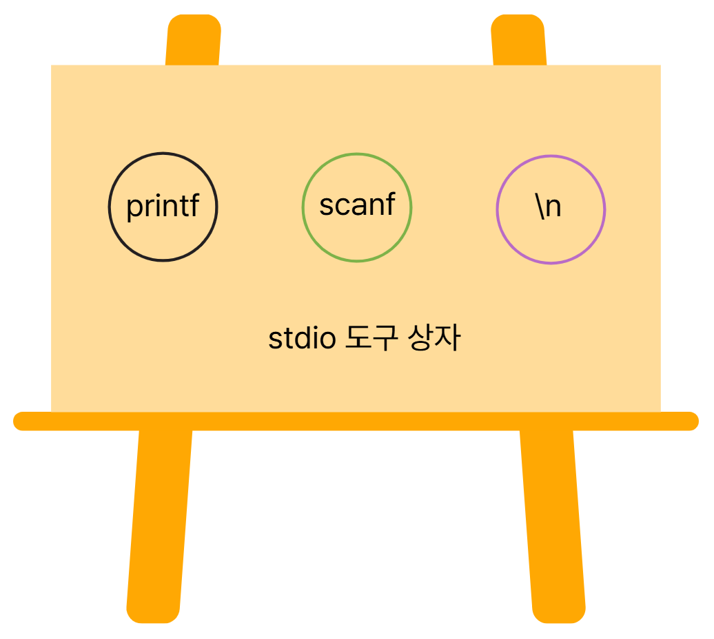
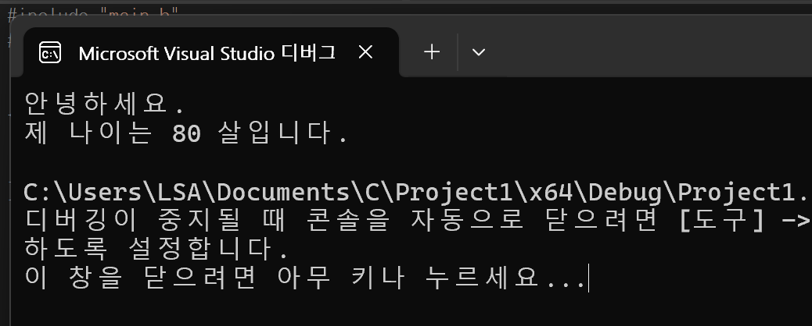

C언어 프로그램은 집 한 채와 같다
C 프로그램 하나는 작은 집 한 채와 같다. 지붕(#include)을 얹고, 현관문(int main)을 달고, 창문(printf)으로 밖과 소통한다. 오늘은 이 세 부분을 하나씩 뜯어본다.
#include <stdio.h>
int main()
{
printf("Hello, World!\n");
return 0;
}
그림 1. #include, main, printf의 관계 구조
🏠 지붕 — #include
#include는 프로그램에 도구를 가져오는 명령어이다. "이 도구상자가 필요하다"라고 컴퓨터에게 미리 알려주는 것이다.
stdio.h는 이름 그대로 Standard Input Output, 즉 "입출력" 도구가 모여있는 상자이다.

그림 2. stdio 도구상자 안의 도구들
- printf — 화면에 무언가를 출력할 때 쓰는 도구이다.
- scanf — 키보드로 무언가를 입력받을 때 쓰는 도구이다.
- \n — 다음 줄로 넘어가는 줄바꿈 도구이다.
f는 format(형식)의 줄임말이다. "형식을 갖춰 출력한다"는 뜻이므로, print=출력 / scan=입력 이라고 짝지어 외우면 헷갈리지 않는다.쉽게 말하면 #include <stdio.h>는 "컴퓨터야, 나 지금부터 화면에 글자도 띄우고 키보드 입력도 받을 것이니, 그 도구들을 가져다 달라"고 말하는 것과 같다.
iostream과 헷갈리기 쉬운데, C언어에서는 stdio.h를 쓴다. 도구상자 이름만 다르고 하는 역할은 비슷하다.🚪 현관문 — int main()
int main()
{
// 여기가 프로그램의 시작점이다
return 0;
}main은 프로그램의 출발점이다.- main — '주요한, 중심이 되는'이라는 뜻이다. 컴퓨터는 항상 main을 가장 먼저 찾아 실행한다.
- int — '정수'라는 뜻이다. 프로그램이 잘 끝났는지 컴퓨터에게 숫자로 알려주는 역할을 한다.
- return 0 — 0을 돌려주면 "잘 끝났다"는 신호이다.
- () — 지금은 빈 가방이지만, 나중에 배우면서 필요한 정보를 채워넣게 된다.
🪟 창문 — printf
printf는 컴퓨터가 나에게 메시지를 보여주는 창문이다. print + format, "형식을 갖춰 출력한다"는 뜻이다.
int main()
{
printf("안녕하세요.\n");
printf("제 나이는 %d 살입니다.\n", 80);
}
"제 나이는 %d 살입니다.\n" , 80
↑ 빈칸 ↓ 여기서 가져와서
└──────── 채워짐 ────────┘
%d는 "여기 숫자 하나를 넣어달라"는 빈칸이고, 콤마 뒤에 오는 값이 그 빈칸에 채워진다.실행 결과

그림 3. 실제 실행 결과 (Visual Studio 디버그 콘솔)
데이터와 자료형
숫자 80을 직접 쓰지 않고, "나이"라는 이름의 상자에 담아두려면 어떻게 해야 할까? 다음 글에서 이어진다.